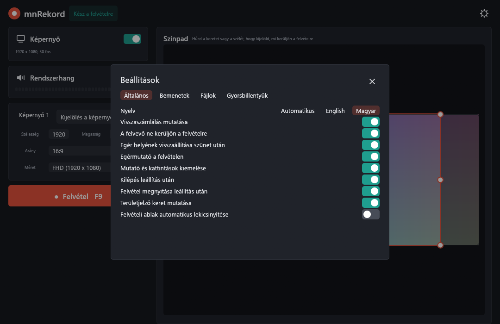
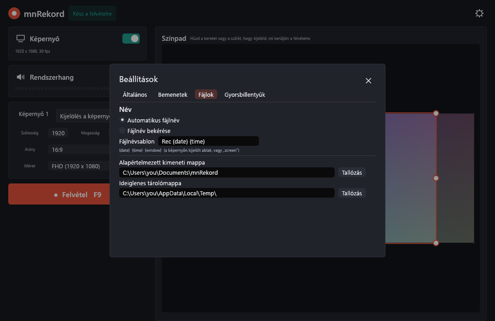

Tartalom
- Bevezetés
- Telepítés
- Gyors kezdés
- A főablak
- Mit rögzítsünk?
- Felvétel
- Felvételek és fájlok
- Beállítások
- Gyorsbillentyűk
- Tálcaikon
- Parancssor
- Felvétel helyreállítása
- Hibaelhárítás
- Műszaki jegyzetek
- Építés forrásból
mnRekord kézikönyv
Bevezetés
Az mnRekord egy kis Windowsos képernyőrögzítő. Rögzíti a képernyő egy részét, egy teljes monitort vagy egyetlen ablakot, a számítógép hangjával együtt, és az eredményt MP4 videóként menti. Az ablak sötét és egyszerű, és mindent tartalmaz, ami néhány kattintással elindított felvételhez kell.
Mit tud:
- rögzít egy területet, egy monitort vagy egy ablakot; a területet a képernyő előnézetén jelölheted ki, vagy közvetlenül az asztalon rajzolhatod meg;
- méretezés közben megtartja a 16:9 vagy 9:16 képarányt, kész méretekkel (360p, HD, FHD, QHD, 4K UHD);
- felvétel közben követi az ablakot, így a kép az ablakon marad, ha elmozdítod;
- rögzíti a rendszerhangot (mindent, amit hallasz) AAC-ként, vagy csak egy általad választott program hangját;
- kirajzolja az egérmutatót, opcionális halóval és kattintásgyűrűvel;
- szüneteltet, folytat, jelölőket tesz a felvételbe; a hosszú felvételeket részekre bontja; az utolsó felvételből GIF-et készít;
- vezérelhető globális gyorsbillentyűkkel, tálcaikonnal és parancssorból;
- összeomlás után felajánlja a megszakadt felvétel mentését.
Az mnRekord nem rögzít mikrofont és webkamerát.
Telepítés
Követelmények
- Windows 10 vagy Windows 11, 64 bites.
- Lejátszóeszköz, ha rendszerhangot is akarsz rögzíteni.
- A Windows H.264 és AAC kódolói. Ezek a Windows részei; az „N” kiadásokon előbb telepítsd a Microsoft Media Feature Pack csomagját.
Telepítővel
Futtasd a mnRekord-0.3.1-setup.exe fájlt. Alapból csak a felhasználódnak telepít, és nem kér rendszergazdai jogot; a párbeszédablak felajánlja a minden felhasználóra telepítést is. Létrehoz egy Start menü bejegyzést, kérésre asztali ikont, és egy eltávolítót (Beállítások → Alkalmazások). A telepítő magyarul és angolul is elérhető.
Get-FileHash mnRekord-0.3.1-setup.exe parancsot, és hasonlítsd össze az eredményt.Telepítés nélkül
Az mnrekord.exe egyetlen fájl. Másold bárhová, és indítsd el; semmi másra nincs szükség.
Eltávolítás
Az mnRekordot a Beállítások → Alkalmazások alatt távolíthatod el. A beállításaid (%APPDATA%\mnRekord) és a felvételeid megmaradnak.
Gyors kezdés
- Indítsd el az mnRekordot. A jobb oldali színpad az asztalodat és egy keretet mutat; a keret az, amit rögzíteni fog.
- Húzd a keretet vagy a fogantyúit arra a területre, amit rögzíteni akarsz. Vagy kattints a Képernyő 1 gombra egy teljes monitorhoz, vagy a Kijelölés a képernyőn gombra egy ablak kiválasztásához.
- Válassz méretet a Arány és a Méret listával, például 16:9 és FHD.
- Nyomd meg a Felvétel gombot (vagy az F9-et). 3-2-1 visszaszámlálás indul, az ablak pedig vékony sávvá alakul.
- Nyomd meg a Leállítás gombot (vagy az F10-et). A videó a
Dokumentumok\mnRekordmappába kerül, és megnyílik a lejátszódban.
A főablak

| Rész | Mit csinál |
|---|---|
| Állapot (fent, a név mellett) | „Kész a felvételre”, ha elindítható a felvétel. |
| Fogaskerék (jobb felül) | Megnyitja a Beállításokat. |
| Képernyő kártya | Kapcsoló a képernyő rögzítéséhez. Mutatja a videó méretét és képkockasebességét, például 1920 x 1080, 30 fps. |
| Rendszerhang kártya | Kapcsoló a számítógép hangjának rögzítéséhez, szintjelzővel, ami mozog, amíg valami szól. A szintjelző alatti listából választhatsz: Minden hang, vagy egy program, aminek van nyitott ablaka, például egy böngésző vagy egy lejátszó. Ilyenkor csak annak a programnak (és segédfolyamatainak) a hangja kerül a felvételre, így a háttérzene és az értesítések kimaradnak. A választás nem függ a felvett kerettől, és megmarad. Windows 10 2004-es vagy újabb verzió kell hozzá. Ha a program indításkor nem fut, vagy a hangját nem lehet rögzíteni, az mnRekord szól, és a teljes rendszerhangot rögzíti. |
| Terület kártya | Monitorok, Kijelölés a képernyőn, szélesség és magasság, Arány, Méret és Követés. Lásd: Mit rögzítsünk? |
| Felvétel gomb | Elindítja a felvételt. Mutatja a gyorsbillentyűt (F9). Szürke, ha semmi nincs bekapcsolva rögzítésre. |
| Utolsó felvétel és GIF készítése | Felvétel után jelennek meg a Felvétel gomb alatt, ha az „Kilépés leállítás után” ki van kapcsolva (különben a program már kilépett). Lásd: Felvételek és fájlok. |
| Színpad | Az összes monitorod élő képe, benne a keret, amit rögzíteni fogsz. |
Mit rögzítsünk?
A keret a színpadon
- Mozgatás: húzd a keret belsejét.
- Átméretezés: húzd valamelyik a nyolc fogantyút (négy sarok, négy oldal közepe).
- Zárolt képaránynál a sarok a szemközti sarokból nő, és az egér bármilyen irányú mozgását követi. Az oldalfogantyú a keret közepe körül nő, és ha a keret kilépne a képernyőről, visszatolódik, így a fogantyú sosem akad el.
- Szabad képaránynál az oldalak és a sarkok megkötés nélkül méretezik a keretet.
Monitorok
A Képernyő 1, Képernyő 2 … gombok egy teljes monitort jelölnek ki. Zárolt képaránynál az adott arányú legnagyobb keret fér be a monitorba, középre igazítva.
Kijelölés a képernyőn
Az ablak eltűnik, és az asztalod állóképe borítja a képernyőt. Ezután:
- kattints egy ablakra vagy monitorra a rögzítéséhez (az ablakot az épp aktuális helyén, látható keretével rögzíti);
- vagy húzz egy téglalapot; az egérmutató melletti nagyító segít a pontos pixel eltalálásában;
- az Esc megszakítja.
Ha ablakot választasz, megjelenik a Követés kapcsoló (lásd lejjebb).
Arány és méret
A Arány lista az alapbeállítás: 16:9, 9:16 vagy Szabad. 16:9 vagy 9:16 esetén a keret mindig megtartja az arányt, bármit csinálsz vele, a Méret lista pedig az adott arányú méreteket kínálja:
| Név | 16:9 | 9:16 |
|---|---|---|
| 360p | 640 × 360 | 360 × 640 |
| HD | 1280 × 720 | 720 × 1280 |
| FHD | 1920 × 1080 | 1080 × 1920 |
| QHD | 2560 × 1440 | 1440 × 2560 |
| 4K UHD | 3840 × 2160 | 2160 × 3840 |
A képernyődnél nagyobb méretek szürkék. Méret választásakor a keret közepe a helyén marad. Szabad esetén a lista az AD (600 × 315), SD, HD, FHD, 2K, QHD és 4K UHD méreteket kínálja.
A Szélesség és a Magasság számmezők húzhatók vagy beírhatók. Zárolt képaránynál az egyik módosítása a másikat is változtatja. A videó szélessége és magassága mindig páros pixelszám, mert a H.264 ezt kéri.
Ablak követése
Ha a területet egy ablakra kattintva választottad ki, a Méret alatt megjelenik a Követés kapcsoló. Ha be van kapcsolva, a keret felvétel közben megtartja a helyét az ablakon belül: ha elmozdítod az ablakot, a kép vele megy. A keret mérete nem változik. A lekicsinyített vagy bezárt ablakot nem követi; a keret ott marad, ahol utoljára látta.
Ugyanez parancssorból is megoldható, lásd a followwindow parancsot. Monitor kijelölése vagy téglalap rajzolása kikapcsolja a követést.
Felvétel

Indítás
Nyomd meg a Felvétel gombot vagy az F9-et. Rövid késleltetés után a 3, 2, 1 számok jelennek meg a rögzített területen (a visszaszámlálás kikapcsolható). Az ablak vékony sávvá húzódik össze, amit bárhová elhúzhatsz. Alapból ki van zárva a felvételből, így sosem jelenik meg a videón. Ha a „Területjelző keret mutatása” be van kapcsolva, egy vékony keret jelöli az asztalon a rögzített területet (ez sem kerül a felvételre).
A sáv
| Vezérlő | Mit csinál |
|---|---|
| Időmérő | A felvett idő. A pont villog felvétel közben, szüneteltetéskor borostyánsárga. |
| Szünet / Folytatás | Szüneteltet és folytat. A szünet ideje nincs benne a videóban. (Gyorsbillentyű: F9.) |
| Leállítás | Befejezi és elmenti a felvételt. (Gyorsbillentyű: F10.) |
| Jelölő | Feljegyzi az aktuális időt egy szövegfájlba a videó mellett. (Gyorsbillentyű: Ctrl+M.) |
| Újrakezdés | Megkérdezi, törölje-e az eddigi felvételt; ha igent mondasz, visszakerülsz a főablakba, hogy újrakezdd. |
| Szintjelző | A rendszerhang szintje. |
| ✕ | Megkérdezi, törölje-e a felvételt és kilépjen-e. |
Az ablak címe is mutatja az állapotot, így a tálcáról is látszik, ha a sáv el van rejtve: ● 00:01:24 mnRekord felvétel közben, Szünet 00:01:24 mnRekord szüneteltetéskor.
Szünet és az egér
Ha a „Egér helyének visszaállítása szünet után” be van kapcsolva (alapból igen), az egérmutató folytatáskor visszaugrik arra a helyre, ahol szüneteltetéskor állt.
Leállítás és mentés
A Leállítás után a felvétel a kimeneti mappába kerül, a fájlnévsablon szerinti névvel. Ha a „Fájlnév bekérése” van kiválasztva, egy mentési ablak kérdezi a nevet. Az alapbeállításokkal a felvétel ezután megnyílik a videólejátszódban, az mnRekord pedig nyitva marad a következő felvételhez („Felvétel megnyitása leállítás után”; ha inkább kilépne, kapcsold be a „Kilépés leállítás után” beállítást).
Ha a visszaszámlálás alatt állítod le, semmi nem mentődik.
Kevés lemezhely
Ha az ideiglenes mappa meghajtóján kb. 300 MB-nál kevesebb a szabad hely, a felvétel magától leáll, és az addig felvett rész mentésre kerül.
Felvételek és fájlok
A videó
MP4, H.264 videóval (Main profil) és 48 kHz-es sztereó AAC hanggal. A fájl töredékekben íródik, ezért még a váratlanul megszakadt felvétel is lejátszható az utolsó töredékig.
Fájlnevek
A név egy sablonból jön (Beállítások → Fájlok). Az alapértelmezett Rec {date} {time}, ami ilyet ad: Rec 2026-11-07 14-05-09.mp4.
| Helyettesítő | Ezzel cserélődik |
|---|---|
{date} | A dátum, 2026-11-07 |
{time} | Az idő, 14-05-09 |
{window} | Az ablak címe, amit a képernyőn kijelöltél, vagy screen |
A fájlnévben nem engedélyezett karakterek _-ra cserélődnek. Ha már van ilyen nevű fájl, (1), (2) … kerül a végére.
Jelölők
Ha tettél jelölőket (Marker), a videó mellé egy név.markers.txt szövegfájl kerül, jelölőnként egy sorral: az idő és a jelölő sorszáma, tabulátorral elválasztva, például 00:01:12.500 Marker 1. Jelölők csak akkor kerülnek rögzítésre, ha a képernyő is rögzítve van.
Részekre bontott felvételek
A Új fájl indítása minden N percben beállítással (Beállítások → Bemenetek) a hosszú felvétel részekre bomlik. Ha egy rész betelt, azonnal új fájl indul, a kész rész pedig lezárul. A fájlok neve név-part1.mp4, név-part2.mp4 … és mindegyik önmagában lejátszható. A szünet ideje nem számít bele. Összeomlás esetén csak az éppen írt rész van veszélyben.
GIF
Ha az „Kilépés leállítás után” ki van kapcsolva, az mnRekord felvétel után nyitva marad, és a Felvétel gomb alatt megjeleníti a GIF készítése gombot. Az utolsó felvételből animált GIF-et készít mellé. A GIF legfeljebb 640 pixel széles, másodpercenként 12 képkockás, és az első 30 másodpercet használja. A GIF-ek nagy fájlok; egy 30 másodperces kép is meghaladhatja a 10 MB-ot. Az elkészítés néhány másodpercig tart, és ha kész, megnyílik a mappa. Részekre bontott felvételnél a GIF az első részből készül.
Beállítások
A fogaskerékkel nyílnak meg. A legtöbb változás azonnal érvénybe lép; mindent elment, amikor bezárod a beállításokat.
Általános

| Beállítás | Jelentése |
|---|---|
| Nyelv | A felület nyelve: Automatikus (a Windows nyelve), English vagy Magyar. Azonnal érvénybe lép. |
| Visszaszámlálás mutatása | A 3-2-1 a felvétel indulása előtt. |
| A felvevő ne kerüljön a felvételre | Elrejti az mnRekord saját ablakait (sáv, visszaszámlálás, területkeret) a videóról. |
| Egér helyének visszaállítása szünet után | Folytatáskor visszaviszi az egeret oda, ahol szüneteltetéskor volt. |
| Egérmutató a felvételen | Kirajzolja az egérmutatót a videóba. |
| Mutató és kattintások kiemelése | Lágy sárga halót rajzol a mutató köré, és piros gyűrűt, amíg egérgomb van lenyomva. |
| Kilépés leállítás után | Kilép az mnRekord, amikor a felvétel mentve lett. Alapból ki van kapcsolva. A writetofile parancs mentés után mindig kilép. |
| Felvétel megnyitása leállítás után | Megnyitja a mentett fájlt az alapértelmezett lejátszóban. |
| Területjelző keret mutatása | Vékony keret az asztalon a terület körül, amíg az nem a teljes monitor. |
| Felvételi ablak automatikus lekicsinyítése | Elrejti a sávot a felvétel indulásakor (használd a gyorsbillentyűket vagy a tálcaikont). |
Bemenetek

| Beállítás | Jelentése |
|---|---|
| Legnagyobb képkockasebesség | 15, 24, 30 vagy 60 képkocka másodpercenként. |
| Minőség | 1-től 100-ig, alapból 75. Magasabb értéknél élesebb a kép és nagyobb a fájl. Egy mozgó színsávos tesztfelvételnél a 20-as minőség kb. 1 MB-ot, a 90-es kb. 8 MB-ot adott ugyanarra a tíz másodpercre. |
| Új fájl indítása minden | Hány perc után induljon új rész; 0 egyetlen fájlt jelent. Lásd: Részekre bontott felvételek. |
| Videokártya használata kódoláshoz | Engedi, hogy a Windows a videókártya H.264 kódolóját használja, ha van. Felvétel után itt látszik a használt kódoló neve. Kapcsold ki, ha videókártya-illesztő miatt gond van. |
Fájlok

| Beállítás | Jelentése |
|---|---|
| Automatikus fájlnév / Fájlnév bekérése | Mentés a sablon szerinti névvel, vagy kérdezzen a mentési ablakban. |
| Fájlnévsablon | A {date}, {time}, {window} helyettesítőkkel. |
| Alapértelmezett kimeneti mappa | Ide kerülnek a felvételek. Alapból Dokumentumok\mnRekord. |
| Ideiglenes tárolómappa | Ide íródik a felvétel, amíg fut. Gyors, elég nagy meghajtó a legjobb. Alapból a Windows ideiglenes mappája. |
Gyorsbillentyűk

Lásd a következő fejezetet.
Gyorsbillentyűk
A gyorsbillentyűk a Windowsban mindenhol működnek, akkor is, ha az mnRekord a háttérben van.
| Művelet | Alapérték |
|---|---|
| Indítás, szünet és folytatás | F9 |
| Leállítás | F10 |
| Jelölő hozzáadása | Ctrl+M |
Módosításhoz nyisd meg a Beállítások → Gyorsbillentyűk fület, kattints a gyorsbillentyűre, és nyomd le az új billentyűt vagy kombinációt (funkcióbillentyű, betű vagy számjegy, igény szerint Ctrl, Alt vagy Shift mellett). A Alapértékek visszaállítása visszaállítja a fenti hármat. Ha egy gyorsbillentyűt már egy másik program használ, az mnRekord jelzi, hogy nem tudta kiosztani.
Tálcaikon
Amíg az mnRekord fut, egy korallszínű ikon látszik a tálca értesítési területén (lehet, hogy a „rejtett ikonok” között). A bal kattintás előhozza az ablakot. A jobb kattintásos menü:
- mnRekord megnyitása – előre hozza az ablakot;
- Felvétel indítása / Felvétel leállítása – a menüpont az állapottal együtt változik;
- Kilépés – kilépés.
Parancssor
Az mnrekord.exe második indítása nem nyit második ablakot: átadja a paramétereit a futó példánynak, és kilép. Ha nem fut példány, a paramétereket az éppen induló példány hajtja végre. A parancsok elé írhatsz /, - vagy -- jelet, vagy semmit; kis- és nagybetűre nem érzékenyek, és egyszerre több is megadható.
mnrekord setoutputpath "D:\Videók" setscreenframerate 60 record
mnrekord stop| Parancs | Hatása |
|---|---|
record | Elindít egy felvételt (visszaszámlálással). |
pause, resume | Szünetelteti vagy folytatja a futó felvételt. |
stop | Leállít és ment, mint a Leállítás gomb. |
writetofile | Leállít, kérdés nélkül automatikus névvel ment, és kilép. |
drawregion | Elindítja a „Kijelölés a képernyőn” funkciót. |
setregion X Y W H | Megadja a területet képernyőpixelekben. |
followwindow "szöveg" | Kijelöli az első látható ablakot, amelynek címében szerepel a szöveg, rögzíti és követi. |
setscreenframerate N | 15, 24, 30 vagy 60. |
setoutputpath "mappa" | Beállítja a kimeneti mappát. |
enablescreenrecording, disablescreenrecording | Be- vagy kikapcsolja a Képernyő kártyát. |
unmutesystemaudio, mutesystemaudio | Be- vagy kikapcsolja a Rendszerhang kártyát. |
setsoundapp chrome.exe | Csak ennek a programnak a hangját rögzíti. A setsoundapp all visszaáll a teljes hangra. |
Egy további mód nem a futó példányt használja:
mnrekord --gif felvetel.mp4 felvetel.gifEgy felvételből GIF-et készít, majd kilép. Az eredmény egy felvetel.gif.log szövegfájl, amiben vagy ok áll, vagy a hiba oka.
setoutputpath, setregion, setscreenframerate és a többi beállítóparancs mentődik a beállításokba, mint az ablakban végzett módosítások.Felvétel helyreállítása
A felvétel futás közben az ideiglenes mappába íródik. Ha az mnRekord szokatlan módon áll le (összeomlás, áramkimaradás, leállított folyamat), a következő indításkor megjelenik a Felvétel helyreállítása kérdés:
- a Helyreállítás megkérdezi, hova mentse a fájlt, és megtartja, ami fel lett véve, az utolsó kiírt töredékig (a vége előtti néhány másodperc elveszhet);
- a Törlés eldobja.
Amíg nem döntesz, a befejezetlen felvétel az ideiglenes mappában marad, egy trecRec… nevű mappában.
Hibaelhárítás
| Probléma | Mit próbálj |
|---|---|
| A Felvétel gomb szürke, vagy „Kapcsold be a képernyőt a felvételhez” | Kapcsold be a Képernyő kártyát. Az mnRekord a képernyőt igényli; csak hangot nem rögzít. |
| „A rendszerhang rögzítése nem lehetséges” | Csatlakoztass vagy engedélyezz egy lejátszóeszközt a Windows hangbeállításaiban, majd kapcsold be újra a Rendszerhangot. |
| Egy ablak fekete a videón | Egyes programok (védett videó, néhány teljes képernyős játék) nem engedik a képernyőrögzítést. Futtasd a játékot ablakos vagy keret nélküli módban. |
| A Windows bejelentkező vagy jogosultságkérő (UAC) képernyője nem látszik | A Windows így működik; ez védett asztal. |
| „Nincs elég hely a lemezen” | Szabadíts fel helyet, vagy válassz másik ideiglenes mappát (Beállítások → Fájlok). Az addigi felvétel mentve van. |
| A videó akadozik egy lassú gépen | Csökkentsd a képkockasebességet vagy a méretet, és hagyd bekapcsolva a „Videokártya használata kódoláshoz” beállítást. A GPU-t használó programok bezárása segít. |
| Egy gyorsbillentyű nem csinál semmit | Lehet, hogy egy másik program használja. Válassz másik billentyűt a Beállítások → Gyorsbillentyűk alatt. |
| Maga a rögzítő is megjelenik a videón | Ellenőrizd, hogy a „A felvevő ne kerüljön a felvételre” be van-e kapcsolva. |
| A méret olyanra változott, amit nem választottam | Zárolt képaránynál a keret mindig megtartja az arányt. Válaszd a Szabad értéket a Ratio listában, ha ez nélkül akarsz méretezni. |
Műszaki jegyzetek
- Rögzítés: a Windows Desktop Duplication API-ja (DXGI), minden monitorra egy duplikáció, amit a terület érint; tartaléknak a GDI szolgál. A területet a beállított képkockasebességgel másolja; az egérmutatót rá rajzolja. Minden koordináta fizikai pixelben van megadva.
- Videó: a képkockák NV12 formátumba (BT.709, korlátozott tartomány) alakulnak, és a Media Foundation H.264 kódolója kódolja őket, minőségalapú sebességszabályozással. Hardveres kódolót használ, ha van.
- Hang: a rendszerhangot WASAPI loopbackkel rögzíti (48 kHz, sztereó), és 160 kbit/s-os AAC-vé kódolja. A hang és a kép ugyanazt a felvételi órát követi, így a szünet és a csend nem tolja el őket egymáshoz képest.
- Fájlok: töredékes MP4, a Media Foundation sink writere írja.
- Beállítások:
%APPDATA%\mnRekord\settings.json. A fájl törlésével visszaállnak az alapértékek. - Egy példány: egy nevesített mutex biztosítja, hogy egy példány fusson; a parancsok a
\\.\pipe\mnRekordnevesített csövön jutnak el hozzá.
Építés forrásból
Windows 10 vagy újabb és egy aktuális stabil Rust eszközlánc kell hozzá.
git clone https://github.com/miklosnemeth/mnRekord
cd mnRekord
cargo test --release
cargo build --releaseA program a target\release\mnrekord.exe. A telepítő elkészítéséhez telepítsd az Inno Setup 6-ot, és futtasd az installer\build.ps1 fájlt; az eredmény a dist\mnRekord-<verzió>-setup.exe.
Az mnRekord Rustban készült, az egui és a windows crate használatával. MIT licenc alatt jelent meg.